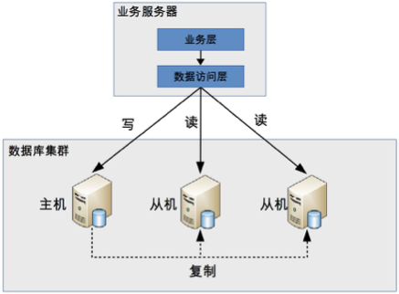

13-高性能数据库集群：读写分离
读写分离就是将数据库的读写操作分配到不同的机器，原理图如下：

读写分离的基本实现：
- 数据库服务器搭建集群模式，一主一从或一主多从。
- 数据库主机负责写，数据库从机负责读。
- 数据库主机通过复制将数据同步到从机，每个数据库服务器都保存所有的数据。
- 业务将写操作发送到数据库主机，将读操作发送到数据库从机。
需要注意的是：这里的是“主从集群”，而不是“主备集群”。“主从集群”的从机是需要负责读操作的。而“主备集群”的备机只是提供数据备份功能，不对外提供服务。
读写分离会引入二个设计复杂度：主从复制延迟和分配机制。
主从复制延迟
主从复制延迟带来的问题是：如果业务服务器在数据写入主机后立即进行读取，读操作读取的是从机的数据，由于主从复制延迟，主机还没有把数据复制到从机。此时就无法读取到最新的数据，业务可能就会发生错误。常见的场景就是在注册成功后，马上登录却提示未注册。
解决主从复制延迟问题的方法：
写操作后的读操作指定发给数据库主服务器。
这种方式和业务进行强绑定，对业务的侵入和影响比较大。
读从机失败后再从主机读取。
这是常见的二次读取，与业务无绑定，只需要设计底层的API即可。但是如果有大量的二次读取的话，会极大的增加主机的压力。
关键业务的读写操作全部指向数据库主服务器，非关键业务采用读写分离。
分配机制
将读写操作分离，然后访问不同的数据库机器，主要有二种实现方式：程序代码封装和中间件封装。
- 程序代码封装
程序代码封装是指在代码层次抽象出一个中间层，实现读写操作分离和数据库连接管理。例如通过Hibernate的封装，就可以实现读写分离。基本架构如下：

程序代码封装有以下几个特点：
- 实现简单
- 每个编程语言需要实现一次,无法通用。如果一个系统包含多个语言，则需要重复编写。
- 故障情况下，如果主从发生切换后，则可能所有系统需要修改配置变重启生效。
目前的开源方案中有淘宝的TDDL。
- 中间件封装
中间件封装是指独立出一套系统，实现读写分离和数据库连接管理。中间件对业务提供SQL兼容协议，业务端无须进行读写分离操作。对于业务服务器来说，访问中间件和访问数据库服务器是无区别的。其实中间件对于业务方来说就相当于数据库。

中间件封装的优点在于：
- 支持多语言
- 支持完整的sql语法和数据库服务器协议。
- 中间件不执行真正的sql，但是所有的sql操作都需要经过中间件。所以中间件的性能要求很高。
- 数据库主从切换到业务服务器无感知，数据库中间件可以探测数据库服务器的主从状态。
目前开源的方案有Mysql的Mysql router和360的Atlas(已停止维护)
注：文章内容总结于极客时间14 | 高性能数据库集群：读写分离